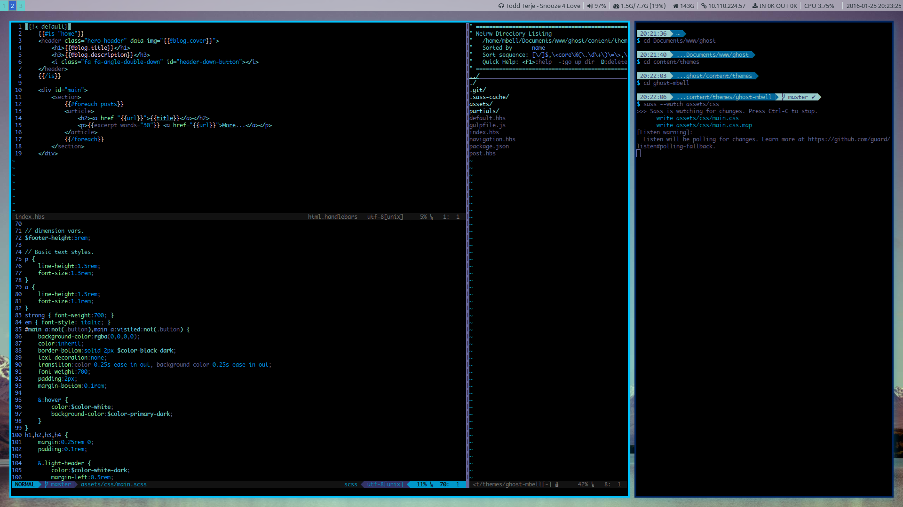

I'm not going to lie, this theme took about a day to make. It's basically just my website theme with a couple of new classes and then a few handlebar files to make the templates. Of course, because it only took a day to make there's going to be bugs. If something looks broken or doesn't work properly, make a new issue here and make sure to put your OS + browser version and I will be very grateful!
Sass makes CSS literally 100x better.
 The problem with CSS is that it can get a little bit... messy. Thankfully, there are a bunch of frameworks which aim to improve this, the two most known ones are Sass and LESS - as you can see, I chose Sass for reasons. These languages are compiled, or 'pre processed' into standard CSS files that can be used on the web. The languages come with a bunch of extra features you don't get in CSS like inheritance, variables and functions. My site would be literally impossible to make without one of these used, honestly. The best bit is that the turquoise colour is set as a variable, so one line of text can make my site absolutely hideous.
You too can use this theme
I put the source files on GitHub and are released, as usual, under the MIT License. Essentially: do what you want with the code, I'd love it if you reference me in your project though! Oh, also, the code is provided as-is so don't come crying to me if you pushed it to production and things broke.